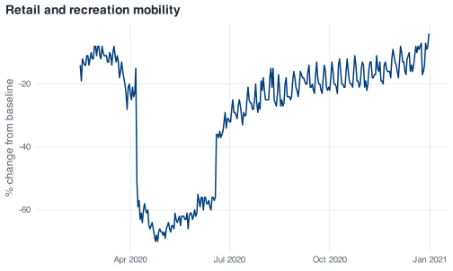
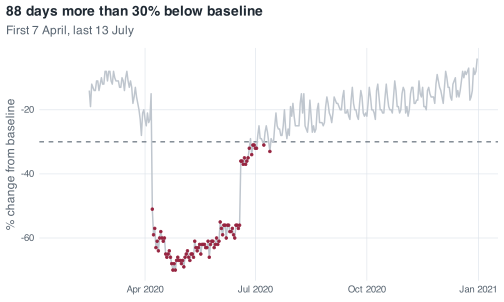

covid <- read_covid()6 Missing values
Every table printed so far has had NA in it, without much comment. This chapter is about reading those gaps. In this file the missing values carry as much information as the numbers: one block of them is a property of Google’s measuring instrument, another is a property of Singapore’s epidemic, and which of the two you are looking at determines what can reasonably be done about it.
The chapter also works through a failure mode of logical subsetting in base R: one line that turns a correct question into an answer 27% too large, without producing an error or a warning.
6.1 Where the gaps are
Counting missing values is sum() over is.na(). is.na() returns TRUE or FALSE for each element, and sum() treats TRUE as 1.
covid %>%
summarise(
confirmed = sum(is.na(confirmed)),
deaths = sum(is.na(deaths)),
stringency = sum(is.na(stringency_index)),
retail = sum(is.na(retail_and_recreation_percent_change_from_baseline)),
workplaces = sum(is.na(workplaces_percent_change_from_baseline)),
residential = sum(is.na(residential_percent_change_from_baseline))
)
#> # A tibble: 1 × 6
#> confirmed deaths stringency retail workplaces residential
#> <int> <int> <int> <int> <int> <int>
#> 1 0 59 0 24 24 24Naming six columns by hand does not scale to a file with two hundred of them, and there are ways to run one count over every column at once without typing any of their names. At six columns the typing is worth it, because the output states on its face what was counted. The case counts and the policy indices are complete for all 345 days, deaths is missing on 59 of them, and every mobility column is missing on exactly 24.
The same count in all six columns suggests that they went missing together, for one shared reason, and the structure of the gaps confirms this.
covid %>%
filter(is.na(retail_and_recreation_percent_change_from_baseline)) %>%
summarise(n = n(), first = min(date), last = max(date))
#> # A tibble: 1 × 3
#> n first last
#> <int> <date> <date>
#> 1 24 2020-01-22 2020-02-14
covid %>%
filter(is.na(deaths)) %>%
summarise(n = n(), first = min(date), last = max(date))
#> # A tibble: 1 × 3
#> n first last
#> <int> <date> <date>
#> 1 59 2020-01-22 2020-03-20Both gaps are contiguous blocks at the start of the year, of different lengths and ending on different days, rather than missing days scattered through the series.
6.2 Two kinds of missing
The mobility gap runs from 22 January to 14 February. Google’s Community Mobility Reports express each day as a percentage change from a baseline, and that baseline is the median for the corresponding day of the week over the five weeks from 3 January to 6 February 2020. A percentage change from a baseline cannot be computed before the baseline period has closed, and Google’s published series begins on 15 February. The missing days are therefore a property of the instrument rather than of Singapore: mobility on 3 February could perfectly well have been measured, but the baseline against which it would have been expressed did not yet exist.
The deaths gap runs from 22 January to 20 March, and it ends because Singapore’s first recorded COVID-19 deaths appear in the data on 21 March. Before that there was no death count to report, and the data hub carries nothing rather than a zero. This gap is a property of the epidemic.
That difference determines what can be done with each gap. For deaths, you know what the missing value would have been if someone had written it down: zero. Zero deaths had been recorded, so the cumulative count was zero, and substituting a zero is recovering a fact rather than inventing one. For mobility, there is no corresponding fact to recover. Substituting a zero would assert that retail activity in early February sat exactly at its baseline, which is a measurement Google never made and you cannot make on their behalf. The two gaps are indistinguishable in the file itself, where each appears as a run of empty cells; the distinction comes from knowing how the data were produced.
Here is what the mobility gap looks like when you plot straight over it:
ggplot(covid, aes(date, retail_and_recreation_percent_change_from_baseline)) +
geom_line() +
labs(
title = "Retail and recreation mobility",
x = NULL, y = "% change from baseline"
)
#> Warning: Removed 24 rows containing missing values or values outside the scale range
#> (`geom_line()`).
The missing days leave no visible hole. The line starts later and the x-axis begins in February, so a reader who did not already know that the file covers January has nothing in the figure to prompt the question. The warning printed above the figure is the only indication, which is a reason to leave warnings visible in your own work rather than suppressing them.
6.3 What NA does to arithmetic
NA in R means “there is a value here and I do not know it”. Any calculation involving an unknown produces an unknown:
This is deliberate: R does not return an average that silently ignores two of the five values. To exclude them, say so:
na.rm = TRUE means “remove the missing values before doing the sum”. What comes back is the mean of the three days that were observed, and it should be described that way rather than as the mean of five.
Comparisons behave the same way:
retail_sample < -30
#> [1] FALSE NA TRUE NA TRUENA < -30 is NA, not FALSE. The value is unknown, so whether it lies below −30 is also unknown. That is the correct result, and it has consequences for subsetting that a later section of this chapter takes up.
The same logic explains why you cannot test for missingness with ==:
NA == NA
#> [1] NATwo unknown values are not known to be equal. Testing for missingness is what is.na() is for.
6.3.1 When na.rm runs out of data
Try to average January’s retail mobility, where every value is missing:
The result is NaN, not NA, and no error is raised. The ten rows contribute ten missing values, and na.rm = TRUE removes all ten, leaving a vector of length zero. mean() on a zero-length vector is the sum of nothing divided by the count of nothing, which is 0 divided by 0, which is NaN: not a number.
NaN stands for a computation that has no meaningful answer, as distinct from NA, which stands for a value you do not have. is.na() returns TRUE for both, so a missing-value check will not distinguish them, and is.nan() will:
A NaN in one row of a monthly summary therefore indicates a month with no observed values in it, rather than a bug: na.rm = TRUE removed every value before the mean was taken.
6.4 Filling in and dropping out
This section introduces two more tools, both from the tidyverse, and each needs a decision about the data before it is used.
coalesce() takes the first non-missing value across its arguments, element by element:
coalesce(retail_sample, 0)
#> [1] -15 0 -51 0 -63This is the appropriate treatment for deaths and not for mobility, for the reason set out above. The code below is defensible because the claim it encodes is true: before 21 March, Singapore’s cumulative recorded COVID-19 deaths were zero.
covid %>%
arrange(date) %>%
mutate(deaths_filled = coalesce(deaths, 0)) %>%
filter(date >= "2020-03-19", date <= "2020-03-22") %>%
select(date, deaths, deaths_filled)
#> # A tibble: 4 × 3
#> date deaths deaths_filled
#> <date> <dbl> <dbl>
#> 1 2020-03-19 NA 0
#> 2 2020-03-20 NA 0
#> 3 2020-03-21 2 2
#> 4 2020-03-22 2 2drop_na() removes whole rows. Compare the row count before and after applying it to the entire table:
Fifty-nine days are removed, and not because of their mobility or stringency values. They go because deaths is missing, and drop_na() with no arguments drops a row if any column in it is missing. Those 59 rows include 35 days of complete mobility readings and 59 days of case counts, discarded on account of a column the analysis may not use.
Naming the columns the analysis depends on limits the loss to rows that are missing those columns:
nrow(drop_na(covid, ends_with("_percent_change_from_baseline")))
#> [1] 321
6.5 Logical subsetting with [ and filter()
A reasonable question about the circuit breaker is the following: on how many days did retail and recreation mobility sit more than 30% below baseline? In base R the question is put with the single-bracket subscript [, which keeps the rows for which a logical condition holds.
Predict before you run
You are about to ask that question twice, once in base R and once with filter(). Write down whether you expect the two to agree. If you expect them to differ, write down by how much.
low_retail <- covid[covid$retail_and_recreation_percent_change_from_baseline < -30, ]
nrow(low_retail)
#> [1] 112The base R version returns 112 days. Now the dplyr version of the identical question:
The result is 88. The two answers differ by 24, which is the number of days on which the mobility columns are missing.
Paired objects get paired names that say how they differ: low_retail_tidy is the tidyverse counterpart of low_retail.
The rows returned by the first version account for the difference:
low_retail %>%
select(date, confirmed, retail_and_recreation_percent_change_from_baseline)
#> # A tibble: 112 × 3
#> date confirmed retail_and_recreation_percent_change_from_baseline
#> <date> <dbl> <dbl>
#> 1 NA NA NA
#> 2 NA NA NA
#> 3 NA NA NA
#> 4 NA NA NA
#> 5 NA NA NA
#> 6 NA NA NA
#> 7 NA NA NA
#> 8 NA NA NA
#> 9 NA NA NA
#> 10 NA NA NA
#> # ℹ 102 more rowsTwenty-four rows in which every column is missing, including date and confirmed, sit at the top of the result. They carry no information about which days they came from, and they are artefacts of how base R indexes with a logical vector.
The chain runs like this. The comparison is evaluated first, giving one TRUE, FALSE or NA per row:
Twenty-four of those 345 values are NA, because NA < -30 is NA. Then that vector goes to [, and base R’s rule for logical indexing is that TRUE returns the element, FALSE skips it, and NA returns a missing element. On a plain vector this is visible in one line:
retail_sample
#> [1] -15 NA -51 NA -63
retail_sample[retail_sample < -30]
#> [1] NA -51 NA -63The result is four elements out of five, from a condition that only two of them satisfy. Applied to a data frame, “return a missing element” means “return a row of missing values”, so each of the 24 unknown days becomes a full row of NA. 88 matching rows plus 24 all-missing rows is 112.
The next question to ask of that result is which days it covers:
head(low_retail$date, 5)
#> [1] NA NA NA NA NAThe first five entries of the date column are missing, even though that column has no missing dates anywhere in the file. The output gives no indication of where they came from.
filter() takes the other position and documents it: it keeps a row only where the condition is TRUE, so a row whose condition evaluates to NA is dropped. The result is the 88 days on which the value is known to be below −30, with dates intact:
The first such day is 7 April, the first day of the circuit breaker, and the last is 13 July, a little over three weeks into Phase 2 reopening.
This is not an argument about base R against the tidyverse, and base R gives you two ways to reach 88 as well. subset() drops NA rows for the same reason filter() does, and wrapping the condition in which() converts it from a logical vector into positions, which discards the NAs on the way:
Three of the four expressions agree on 88. Single-bracket logical subsetting is the exception, because it alone keeps a row for every NA the condition returns.
quiet_days <- covid %>%
filter(retail_and_recreation_percent_change_from_baseline < -30)
ggplot(covid, aes(date, retail_and_recreation_percent_change_from_baseline)) +
geom_hline(yintercept = -30, colour = nus_colours[["muted"]], linetype = "dashed") +
geom_line(colour = nus_colours[["grey"]]) +
geom_point(data = quiet_days, colour = nus_colours[["crimson"]], size = 0.9) +
labs(
title = "88 days more than 30% below baseline",
subtitle = "First 7 April, last 13 July",
x = NULL, y = "% change from baseline"
)
#> Warning: Removed 24 rows containing missing values or values outside the scale range
#> (`geom_line()`).
Of the two answers, 88 is the answer to the question that was asked; 112 is 27% larger, and the 24 rows it adds stand for days on which Singapore’s retail mobility is unknown, so they cannot be counted as days on which it was low.
6.6 The two deaths that differencing loses
Chapter 5 ended with a caveat about deaths. The tools in this chapter account for it. Difference the cumulative death count exactly as you differenced cases:
The sum of the differenced series is 27 against a true total of 29. The check from the last chapter fails, and the two missing deaths are both on one row:
deaths_daily %>%
filter(date >= "2020-03-19", date <= "2020-03-23") %>%
select(date, deaths, daily_deaths)
#> # A tibble: 5 × 3
#> date deaths daily_deaths
#> <date> <dbl> <dbl>
#> 1 2020-03-19 NA NA
#> 2 2020-03-20 NA NA
#> 3 2020-03-21 2 NA
#> 4 2020-03-22 2 0
#> 5 2020-03-23 2 0On 21 March the cumulative count goes from missing to 2. The increment is 2 rather than 1, because the record shows both of Singapore’s first COVID-19 deaths on the same day. Subtracting the previous row gives 2 - NA, which is NA, and sum(na.rm = TRUE) then drops it, along with the two deaths it stands for.
Coalescing before differencing recovers them, and the substitution is legitimate for the reason given earlier in the chapter:
The plain version at the top of this section does not do this. It differences deaths as the file supplies them, so its daily_deaths column carries NA for the first 60 days and sums to 27. That is a choice to stay close to what the file records rather than to what you infer about it, and it is defensible on those grounds. Either convention can be justified provided it is stated. The place to state it is a # comment next to the code that makes the choice, as in the chunk above. Summing that column with na.rm = TRUE and reporting the result as the 2020 death toll understates the toll by two deaths, and the omission has to be declared alongside the figure.
6.7 Exercise
Exercise 6.1 (Interrogate the mobility gap)
- Establish whether the 24 missing days are the same 24 days in all six mobility columns, or merely the same number of days in each. Counting is not enough here; you need to compare which rows.
- Compute the mean parks mobility for February 2020 with
na.rm = TRUE. Report the number, then report how many days it is actually the mean of, and write one sentence explaining why “February’s average parks mobility” would be a misleading label for it. - Ask how many days parks mobility fell below −40, twice: once with the single-bracket subscript and once with
filter(). Predict the size of the gap between the two answers before you run either, then explain the gap you get in one sentence.
Stuck? Open for a hint (not the answer)
For part 1, which(is.na(x)) gives you the row numbers rather than a count, and two sets of row numbers can be compared directly. For part 3, the difference between the two answers is the same number for every mobility column, and you already know what it is.